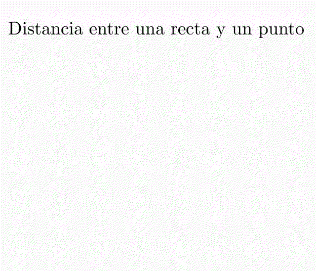

Tabla de contenidos
- 1. Introducción
- 2. Intersecciones entre...
- 3. Distancias
- 4. ¿Qué es un sistema de ecuaciones lineales?
- 5. ¿Qué es el conjunto solución de un sistema de ecuaciones lineales?
- 6. ¿Cómo hallar el conjunto solución de un sistema de ecuaciones lineales?
- 7. Texto teórico y guía de actividades
- 8. Autoevaluación
1. Introducción
En este libro vamos a combinar el final de la unidad 2 (intersección entre rectas y planos) y el comienzo de la unidad 3 (sistema de ecuaciones).
Además, en este libro, estaremos pensando en distancias entre puntos y rectas, entre puntos y planos, entre rectas y entre planos.
2. Intersecciones entre...
Traten de pensar (y resolver) el problema 31 de la página 40 de la Guía de problemas.
Si no sale, pueden plantear sus preguntas en el foro Consultas. Intenten ajustar la pregunta lo que más puedan. Intenten que la pregunta no sea cómo empiezo. Traten de ver si están entendiendo el enunciado. Si hay algo del enunciado que no se entiende, pregunten sobre eso, copiando la parte que no se entiende.
Una vez que consideran que ya trabajaron un buen tiempo con el problema, miren una posible resolución que la profesora Perla nos muestra en el siguiente Video con una resolución del problema 31 de la pág 40 de la Guía.
En el video hay un error en el minuto 4:30 al escribir la ecuación implícita del plano \( \pi_2 \) , se debió haber escrito \( 3x-y+z=1 \) . De todas maneras, les pasamos una Resolución escrita del problema 31 de la página 40.
Luego, vean el Video sobre intersección entre planos, aquí el profesor Martín T nos presenta un ejemplo de intersección entre una recta (escrita en forma vectorial) y un plano (en forma implícita)
Finalmente, en el Video sobre intersección de tres planos el profesor Claudio nos presenta una visualización de la posición relativa entre tres planos y busca analíticamente la intersección entre tres planos en dos ejemplos.
Para practicar sobre estos temas, pueden resolver los ejercicios 1 y 2 de la Guía de ejercitación sobre intersecciones y distancias.
3. Distancias
Podemos definir la distancia entre dos puntos \( A \) y \( B \) como la norma del vector \( \vec{AB} \)
¿Cómo podemos pensar la distancia entre un punto y una recta? y ¿entre un punto y un plano? y ¿entre rectas? y ¿entre planos?
En los siguientes videos el profesor Martín T nos cuenta alguna repuesta a alguna de estas preguntas:
- Video sobre distancias en el plano \( \mathbb{R}^2 \)
- Video sobre distancias en el espacio \( \mathbb{R}^3 \)
¿Cómo definiríamos la distancia de dos objetos que se cortan, es decir, que tienen al menos un punto en común?
Para practicar sobre distancias pueden realizar el resto de la ejercitación de la Guía de ejercitación sobre intersecciones y distancias.
4. ¿Qué es un sistema de ecuaciones lineales?
En los capítulos anteriores, y en el libro anterior también, hemos trabajado con intersecciones entre distintos objetos. Por ejemplo, entre rectas de \( \mathbb{R}^2 \), entre rectas de \( \mathbb{R}^3 \), entre planos en \( \mathbb{R}^3 \).
Vimos que hallar los puntos que tienen en común estos objetos implica plantear una o varias ecuaciones, y hallar todos los valores de las incógnitas o variables que satisfacen las igualdades.
En lo que sigue intentaremos saber qué es un sistema de ecuaciones lineales, qué es una solución del sistema, qué es el conjunto solución del sistema, conocer algunas técnicas para hallar el conjunto solución, entre otros asuntos que trabajaremos las próximas semanas.
Las siguientes son ecuaciones lineales:
- \( 3x −2y = 5 \)
- \( 8x_1 −2x_2 +4x_3 −5x_4 +7x_5 = 4 \)
- \( 2p +3q −5r = 0 \)
Cuando en todas las ecuaciones que tenemos las variables intervinientes son las mismas, tenemos un sistema de ecuaciones. Por ejemplo, el siguiente es un sistema de tres ecuaciones lineales con tres incógnitas o variables, es decir, un sistema de \( 3 \times 3 \)
-
\[
\begin{cases}
2x + y - z = 1 \\
x - 3y + z = -2 \\
x + y + z = 6
\end{cases}
\]

5. ¿Qué es el conjunto solución de un sistema de ecuaciones lineales?
Dado un sistema de \( m \times n \) , es decir de \( m \) ecuaciones con \( n \) incógnitas o variables, diremos que:
Una solución del sistema es un vector de \( n \) componentes tal que cada una de sus componentes reemplazadas en las variables (en orden) satisfacen todas las igualdades del sistema.
Por ejemplo, el vector \( (1, 2, 3) \) es una solución del sistema:
-
\[
\begin{cases}
2x + y - z = 1 \\
x - 3y + z = -2 \\
x + y + z = 6
\end{cases}
\]
pues al reemplazar \( x \) por \( 1 \), \( y \) por \( 2 \) y \( z \) por \( 3 \) se verifican las tres igualdades. Por favor, verifíquenlo ustedes.

Les proponemos que miren el siguiente video en el que se explica cuál es la interpretación geométrica de un sistema de ecuaciones de \( 3 \times 3 \) y cómo se clasifica según la cantidad de soluciones que tenga el sistema.
Llamaremos conjunto solución de un sistema de ecuaciones lineales al conjunto de todos los vectores que son solución.
¿Cuál es el conjunto solución del siguiente sistema?
\[ \begin{cases} 2x - y - z = -5 \\ 3y - z = 9 \\ 2z = 6 \end{cases} \]
6. ¿Cómo hallar el conjunto solución de un sistema de ecuaciones lineales?
El sistema del final del apartado anterior es muy particular, porque está triangulado
\[ \begin{cases} 2x - y - z = -5 \\ 3y - z = 9 \\ 2z = 6 \end{cases} \]
Puede verse a partir de la tercera ecuación que la única posibilidad para \( z \) es que valga \( 3 \) para que se verifique la tercera igualdad. Con este valor de \( z = 3 \), podemos ver en la segunda ecuación que la única posibilidad para \( y \) es \( 4 \). Nótenlo despejando \( y \) en esa ecuación y reemplazando el valor de \( z \) por \( 3 \). Con estos valores, \( y = 4 \) y \( z = 3 \), reemplazándolos en la primera ecuación, podemos hallar que \( x \) debe si o sí ser \( 1 \). De esta manera, el conjunto solución del sistema está formado por un único vector que podemos responder así: \( (x, y, z) = (1, 4, 3) \).
Lo que tuvo de bueno este sistema para que sea más o menos fácilmente resoluble es que en una de las ecuaciones solo aparece una de las variables, en la otra, solo dos, y en la primera las tres variables
Un método para resolver sistemas de ecuaciones lineales consiste en transformarlo en otro que tenga la misma solución pero que esté triangulado.
Diremos que dos sistemas de ecuaciones lineales que tienen el mismo conjunto solución son sistemas equivalentes.
En el siguiente video, el profesor Daniel nos cuenta qué operaciones pueden hacerse para transformar un sistema en otro equivalente y nos presenta alguna justificación.
En el siguiente video se presenta un método de resolución de sistemas que conocido como método de eliminación de Gauss aprovechando las propiedades mencionadas en el video anterior.
7. Texto teórico y guía de actividades
En el texto Maestripieri, Pavón y Resmesar (2017) Notas de Álgebra Lineal, encontrarán las definiciones y métodos explicados en los apartados anteriores.
Entre otros conceptos, en el texto anterior se indican cuántas soluciones puede tener un sistema de ecuaciones lineales, y se presenta una clasificación de los sistemas de acuerdo a la cantidad de soluciones. ¿Pudieron encontrarla?
Además, tienen el siguiente Listado de ejercicios y problemas sobre sistemas de ecuaciones lineales para practicar estos conceptos.
En ese listado se indican algunos problemas de la Guía de problemas
Y algunos ejercicios del siguiente texto: Maestripieri, Pavón y Resmesar (2017) Notas de Álgebra Lineal. Cap. 2. Pág 78 a 81 - Ejercicios.
Les pasamos, también, el acceso al texto completo en versión digital: Maestripieri, Pavón y Resmesar (2017) Notas de Álgebra Lineal. UNGS (completo).
Recuerden dejar sus Consultas en el foro y/o hacerlas en cualquiera de los encuentros presenciales.
8. Autoevaluación
Como parte de la evaluación continua (ver las condiciones en Condiciones de trabajo, de evaluación y de acreditación) les proponemos las siguientes autoevaluaciones: